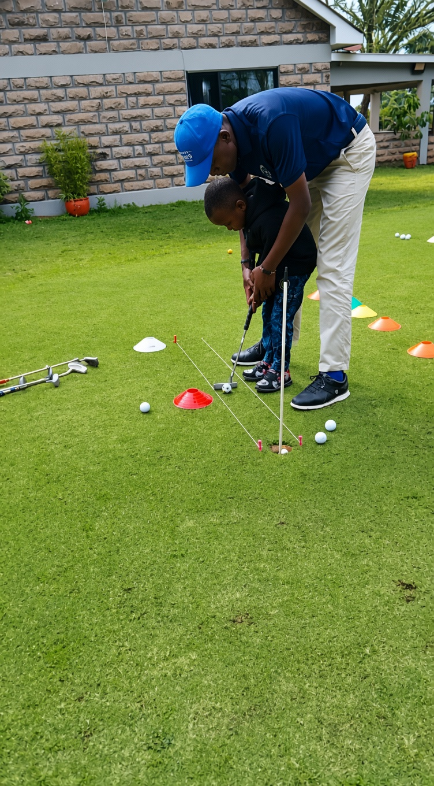
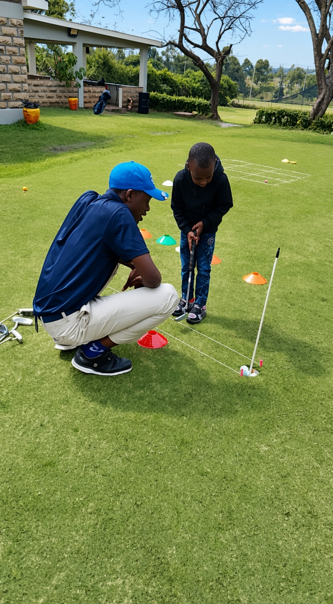
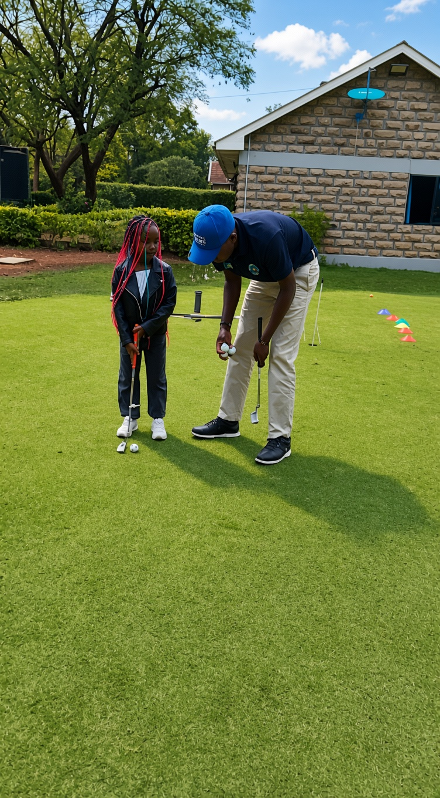

Clarity before repetition.
Understand what you are working on. Ask questions until your practice priority makes sense.

Meet Coach Lincolyn.
Junior and adult golf coaching, with one belief at the heart of the brand: nothing beats consistency.
Talk about your experience, ask questions and explore what you want to achieve in the game.
Talk with Coach LincolynIt’s the idea that connects learning, practice and the next step in your golf.
Understand what you are working on. Ask questions until your practice priority makes sense.
Connect what you practise to a skill or goal that matters to your game.
Keep learning, revisit your priorities and discuss what comes next.


Before booking, ask about relevant qualifications, junior coaching experience and teaching arrangements. Coach Lincolyn can answer your questions directly.
Ask about coaching experienceTell Coach Lincolyn where you’re starting and what you’d like to achieve.